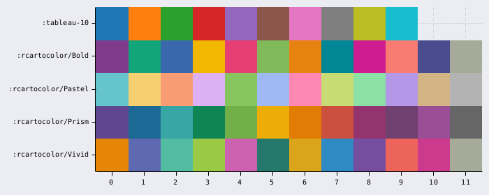
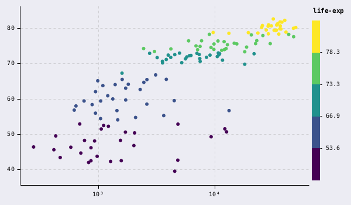
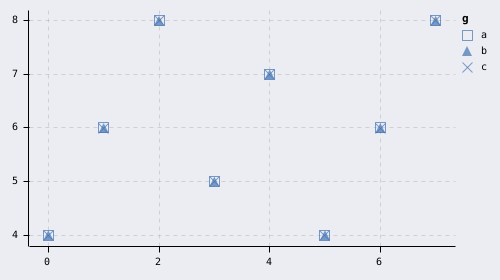
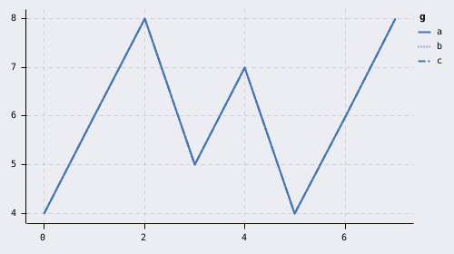

4 Aesthetics and legends
Five aesthetics style marks from data: :color, :shape, :size, :dash and :pattern. Each mapped aesthetic has a scale (:scales {:color spec}) mapping its domain (levels or a numeric range) onto attributes (colours, shapes …), and every scale draws a legend unless told not to. All five share one spec; the colour scale uses every key, the others differ only in their :range.
(ns reference.aesthetics-legends
(:require [clojure2d.color :as c]
[cljplot2.chart :as chart]
[cljplot2.core :as plot]
[cljplot2.describe :as describe]
[cljplot2.scale.aesthetic :as aesthetic]
[notebook-utils :as nu]))Data: Gapminder 2007: life expectancy, population and GDP per capita, data-to-viz example dataset 4_ThreeNum (Yan Holtz; Gapminder via the R gapminder package); licence: MIT (data_to_viz repository).
(def gapminder (nu/dataset :gapminder-2007))4.1 Levels or numbers
The scale kind follows the data: levels (strings, keywords) get an :ordinal scale - one attribute per level, in :domain order - numbers a :linear one - a gradient or a size range. :type :categorical treats numbers as levels; :identity reads the attributes from the data.
| Option | Type | Default | Description |
|---|---|---|---|
| :kind | one of :binned :identity :linear :ordinal | :linear for numeric :color / :size data, else :ordinal | scale kind: :ordinal (levels), :linear (a gradient or size range), :binned (:color by bins) or :identity (values are the attributes) |
| :type | one of :categorical :numeric | declare numbers categorical (ordinal levels) or force a numeric scale | |
| :domain | sequential of any value or nil | the data's levels (sorted) or [min max] | ordinal: the levels in order; linear / binned: [lo hi] |
(plot/render-image (plot/arrange [{:data gapminder
:mapping {:x :gdp-per-cap :y :life-exp :color :continent}
:charts [(chart/scatter)]
:scales {:x {:kind :log :formatter :power}
:color {:domain ["Europe" "Asia" "Africa" "Americas" "Oceania"]}}}
{:data gapminder
:mapping {:x :gdp-per-cap :y :life-exp :color :life-exp}
:charts [(chart/scatter)]
:scales {:x {:kind :log :formatter :power}}}]
{:columns 2})
{:width 900 :height 350})
4.2 Colour range
The attributes the domain maps to: a sequence of colours, a level → colour map, or a clojure2d palette or gradient name - 7339 palettes and 5009 gradients. Without :range the theme :palette supplies it.
| Option | Type | Default | Description |
|---|---|---|---|
| :range | map of any value to a clojure2d color or a function or a palette or gradient name, or a non-empty sequence of colors | theme :palette | attributes the domain maps to: palette, gradient, shapes, sizes [min max], dashes or patterns, or a level map |
Search palettes and gradients by name with clojure2d.color/find-palette and find-gradient:
(c/find-palette #"tableau")(:tableau-10
:tableau-10-2
:tableau-10-light
:tableau-10-medium
:tableau-20
:tableau-20-2
:tableau-classic-20
:tableau-classic-medium)Swatches of a few palettes (an :identity colour scale reads the colours from the data):
(def palettes (c/find-palette #"^:(rcartocolor/(Bold|Pastel|Vivid|Prism)|tableau-10)$"))(plot/render-image {:data (for [p palettes [i col] (map-indexed vector (c/palette p))]
{:palette (str p) :i i :color col})
:mapping {:x :i :y :palette :color :color}
:charts [(chart/tile)]
:scales {:color {:kind :identity :legend false}
:y {:reverse true}
:x {:ticks 12}}}
{:width 700 :height 280})
Gradients, sampled the same way:
(def gradients (c/find-gradient #"^:viridis/"))(plot/render-image {:data (for [g gradients i (range 32)]
{:gradient (str g) :i i :color ((c/gradient g) (/ i 31.0))})
:mapping {:x :i :y :gradient :color :color}
:charts [(chart/tile {:stroke-color :none})]
:scales {:color {:kind :identity :legend false}
:y {:reverse true}
:x {:axis false}}}
{:width 700 :height 300})
4.3 Placing values on the range
How values spread over the attributes: a diverging gradient around :midpoint, values placed by their square root or logarithm (:transform), the range reversed, size by area.
| Option | Type | Default | Description |
|---|---|---|---|
| :spread | true or false | false | ordinal :color: the range resampled to one colour per level |
| :midpoint | a finite number | linear / binned :color: the value at the gradient's middle (a diverging scale) | |
| :transform | one of :sqrt :log | linear :color: values placed along the gradient by their square root or logarithm | |
| :reverse | true or false | false | the attributes in reverse order |
| :area | true or false | false | :size: the mark's area, not its size, grows linearly with the value |
(plot/render-image (plot/arrange [{:data gapminder
:mapping {:x :gdp-per-cap :y :life-exp :color :life-exp}
:charts [(chart/scatter)]
:scales {:x {:kind :log :formatter :power}
:color {:range [:steelblue :white :firebrick] :midpoint 65
:title "life-exp, midpoint 65"}}}
{:data gapminder
:mapping {:x :gdp-per-cap :y :life-exp :color :pop}
:charts [(chart/scatter)]
:scales {:x {:kind :log :formatter :power}
:color {:transform :log :range :viridis/viridis :reverse true
:title "pop, log, reversed"}}}]
{:columns 2})
{:width 900 :height 350})
4.4 Bins
A :binned colour scale cuts numbers into classes - a count of equal bins, breaks, a binning method or quantile bins - and draws a key per class.
| Option | Type | Default | Description |
|---|---|---|---|
| :bins | keyword or vector of a finite number (at least 2) or quantile bins {:quantiles q :estimation e}: q a positive count or a vector of increasing probabilities strictly between 0 and 1, e one of [:legacy :r1 :r2 :r3 :r4 :r5 :r6 :r7 :r8 :r9] or a positive integer | 5 equal bins | binned :color: a bin count, breaks, a bin method or quantile bins |
(plot/render-image {:data gapminder
:mapping {:x :gdp-per-cap :y :life-exp :color :life-exp}
:charts [(chart/scatter)]
:scales {:x {:kind :log :formatter :power}
:color {:kind :binned :bins {:quantiles 5} :range :viridis/viridis}}}
{:width 600 :height 350})
4.5 Legend
One legend per mapped aesthetic, titled by the mapped column’s name: :title renames it, :formatter writes its labels, :ticks picks the entries of a numeric scale, :legend false hides it (the plot’s :legend false hides them all). Aesthetics mapped to the same column with equal levels share one legend. Legends sit right of the panels; their sizes and frame are in the theme :legend section (Theme chapter).
| Option | Type | Default | Description |
|---|---|---|---|
| :formatter | a function | legend labels, a function of the level or value | |
| :ticks | sequential of a finite number or a positive integer or nil | linear :size / :color: the legend entries or colour bar ticks - a count or the values | |
| :title | string or nil | the mapped column's name | legend title (nil - none) |
| :legend | true or false or nil | true | show the scale's legend |
(plot/render-image {:data gapminder
:mapping {:x :gdp-per-cap :y :life-exp :color :continent :shape :continent :size :pop}
:charts [(chart/scatter)]
:scales {:x {:kind :log :formatter :power}
:color {:title "continent"}
:size {:title "population" :ticks [1e7 1e8 1e9]
:formatter #(format "%.0f M" (/ (double %) 1e6))}}}
{:width 700 :height 380})
4.6 Shape
Point shapes: characters (\O circle, \s square, \A triangle …), keywords or shape maps.
| Option | Type | Default | Description |
|---|---|---|---|
| :range | map of any value to a shape character, keyword or shape map or sequential of a shape character, keyword or shape map (at least 1) | theme :palette | attributes the domain maps to: palette, gradient, shapes, sizes [min max], dashes or patterns, or a level map |
(def groups (for [g ["a" "b" "c"] i (range 8)] {:g g :x i :y (+ (* 2 (count (str g i))) (mod (* i 7) 5))}))(plot/render-image {:data groups
:mapping {:x :x :y :y :shape :g}
:charts [(chart/scatter {:size 10})]
:scales {:shape {:range [\s \A \x]}}}
{:width 500 :height 280})
4.7 Size
Sizes [min max] for numbers (a level map or a list for levels); :area true grows the area, not the diameter, with the value.
| Option | Type | Default | Description |
|---|---|---|---|
| :range | map of any value to a non-negative number or [min max], non-negative numbers, min <= max | theme :palette | attributes the domain maps to: palette, gradient, shapes, sizes [min max], dashes or patterns, or a level map |
(plot/render-image {:data gapminder
:mapping {:x :gdp-per-cap :y :life-exp :size :pop}
:charts [(chart/scatter)]
:scales {:x {:kind :log :formatter :power}
:size {:range [2 30] :area true :legend false}}}
{:width 500 :height 300})
4.8 Dash
Line dashes: named styles or dash arrays.
| Option | Type | Default | Description |
|---|---|---|---|
| :range | map of any value to :none, a dash style (:dashed :dot-dash :dot-dot-dash :dotted :long-dash :loose-dot :solid :two-dash) or a sequence of positive numbers or sequential of :none, a dash style (:dashed :dot-dash :dot-dot-dash :dotted :long-dash :loose-dot :solid :two-dash) or a sequence of positive numbers (at least 1) | theme :palette | attributes the domain maps to: palette, gradient, shapes, sizes [min max], dashes or patterns, or a level map |
(plot/render-image {:data groups
:mapping {:x :x :y :y :dash :g}
:charts [(chart/line {:width 2})]
:scales {:dash {:range [:solid :dotted [8 3 2 3]]}}}
{:width 500 :height 280})
4.9 Pattern
Fill patterns of areas and bars: names or pattern maps.
| Option | Type | Default | Description |
|---|---|---|---|
| :range | map of any value to a pattern name (:back-hatch :cross :dense-dots :diagonal-cross :dots :hatch :horizontal :solid :vertical) or a pattern map or sequential of a pattern name (:back-hatch :cross :dense-dots :diagonal-cross :dots :hatch :horizontal :solid :vertical) or a pattern map (at least 1) | theme :palette | attributes the domain maps to: palette, gradient, shapes, sizes [min max], dashes or patterns, or a level map |
(plot/render-image {:data [{:k "a" :v 3} {:k "b" :v 5} {:k "c" :v 4}]
:mapping {:x :k :y :v :pattern :k}
:charts [(chart/bar {:color :white :stroke-color :black :pattern-color :black})]
:scales {:pattern {:range [:dots :cross {:kind :lines :angle 45 :spacing 4 :width 1}]}}}
{:width 500 :height 280})
source: notebooks/reference/aesthetics_legends.clj